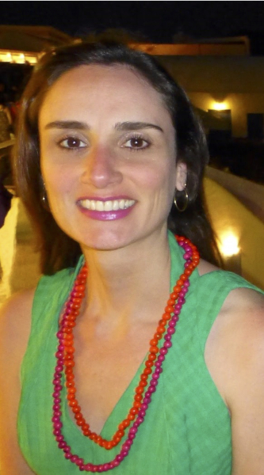
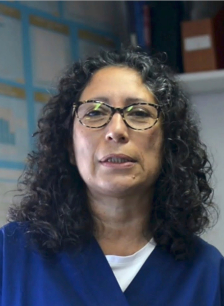

Capacity Building
Surveillance is an inherently longitudinal process so sustainability in the future is vital. A key focus of the second phase of the GPS project (GPS2) is to establish a working system for sustainable genomic surveillance with an emphasis on decentralization of data generation and analysis, especially in low- and middle- income countries (LMICs) where the burden of pneumococcal disease is high. In view of variation in local infrastructure and resources, the GPS project devises bespoke support for project partners to cater for different needs in sequencing, training and mentorship.
Sustainable local sequencing
At the beginning of GPS2, the GPS team engaged with key partners to discuss the feasibility of local data generation and resources required, identifying 10 institutes in 8 LMIC countries:
- Bangladesh (CHRF)
- India (CMC and KIMS)
- Kenya (KEMRI)
- Malawi (MLW)
- Nigeria (University of Ibadan and Redeemer's University)
- Pakistan (AKU and LUMS)
- South Africa (NICD)
- The Gambia ( LSHTM MRC unit)
Enhancing local capacity for data analysis
A key aim of GPS2 is to support the development of skills of local researchers who become confident to independently analyse genomic data. Supporting the development of bioinformatics expertise is achieved through a multi-faceted approach, through a combination of online training, in person workshops and ongoing mentoring.
In 2019, collaborators from six LMIC countries joined the GPS team at the Wellcome Sanger institute for an intensive week focused on analysis and drafting of country analysis papers for publication, some of which have been published. Our plans for an in person bioinformatics workshop are currently on hold due to the pandemic. However, free online training resources have been developed by the GPS and JUNO training manager Christine Boinett. We aim to deploy a face-to-face or virtual format 5 day bioinformatics course to supplement the online courses in partnership with colleagues from Wellcome Connecting Science (WCS). Other FREE courses from WCS, in partnership with FutureLearn are currently available online for anyone to take in their own time. Some of these courses offer continuing professional development (CPD) credits.
Below is some feedback from two of our partners who attended the writers workshop. You can also find out more about Samanta Almeida’s and Paula Gagetti’s in-depth country level S. pneumoniae genomic analysis work through their publications in Microbial Genomics.
 “The participation in the GPS project was an experience analysing WGS data and meeting the challenge of handling a large volume of data. The GPS team made a great effort to help me with the analysis and to address difficulties. In my opinion, it is a project that goes far beyond data generation, as there is a real effort to build capacity by sharing knowledge and providing bioinformatics training. During my participation, I received many incentives to develop studies and opportunities to present these results. I presented abstracts in the most important pneumococcus international events, the International Symposium on Pneumococcal and Pneumococcal Diseases (ISPPD), Australia (2018), and Toronto (2020) editions.”
 “The most exciting thing was that prestigious professionals in the pneumococcal area dedicated a week of their time to sit down with us, discuss our results and draw conclusions about the impact of vaccines in different regions of the world. That was really amazing. Added to the human warmth of each of them that also allowed us to share beautiful moments drinking a beer in the pubs of Hinxton and Cambridge.
From there, a very important link was generated. I worked a lot with Steph, whom I thank for the recognition and respect for our work and for answering all my questions immediately. Working with such a prestigious group of experts with the highest level of responsibility gives us the confidence to do other works in the future”
One-to-one training
Nida Javaid is a PhD student from a partner group in the Department of Biology, Lahore University of Management Sciences, Pakistan. Nida obtained an 8 months research fellowship funded by Higher Education Commission in Pakistan and joined the Bentley group the Wellcome Sanger Institute for hands-on training in genomic analyses of S. pneumoniae. Unfortunately, Nida’s arrival coincided with the UK national lockdown and the switch to working from home. Despite these challenges, Nida quickly integrated with the team, and learnt how to apply key tools used for characterising the genomic epidemiology of pneumococci to datasets from South Africa and Pakistan. Dr. Stephanie Lo is Nida’s main mentor and together they made a great mentor-mentee team. As the lockdown restrictions started easing, Nida started having weekly in-person meetings with Stephanie, and joined occasional get-togethers with other team members.
Find out more about Nida’s work with the Bentley team:
“The original plan was that I will be working on the population genomics analysis of pneumococcal isolates from Pakistan. However, due to the lockdown, sequencing of isolates from Pakistan was delayed and I started working on the country analysis of pneumococcal carriage isolates from South Africa. I started with running quality control analysis of the sequenced data, followed by in silico serotyping, genotyping, prediction of antimicrobial resistance and phylogenetic analysis from pneumococcal genomes using a wide range of command-line tools such as SeroBA and PopPUNK. I then visualized the output using Microreact, a tool that allows me to interactively explore the phylogeny with temporal and geographical data. Now almost a year and a half later, this manuscript is ready for submission. I would like to thank Dr. Shabbir Madhi for allowing me to work on his dataset.
After a few months, pneumococcal isolates from Pakistan were sequenced. I then analysed these data using the approach and tools that I had learnt during my first few months at Sanger, and am working towards publication of my Pakistan country analysis. We also presented our preliminary results at the ABPHM online conference. Although I am back in Pakistan now, I am still actively working with Stephanie and attend the team meetings regularly. I would like to thank Stephen, Stephanie, and the team for their support and kindness. I would also like to thank my PhD advisor, Dr. Shaper Mirza, for her support and guidance through my PhD.”
Portable pipeline: reducing the bioinformatics burden
Ensuring quality control of sequence data and generating succinct, reliable data characterising genomes can be time consuming and require substantial bioinformatic training. During GPS2 a portable pipeline is being developed which will enable collaborators to easily input whole genome sequencing data and generate the in silico typing data required for downstream analysis.